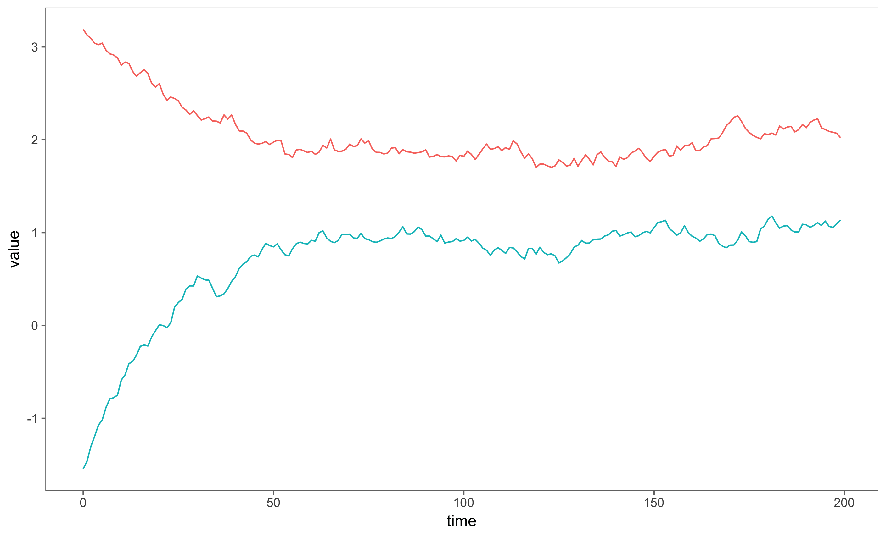
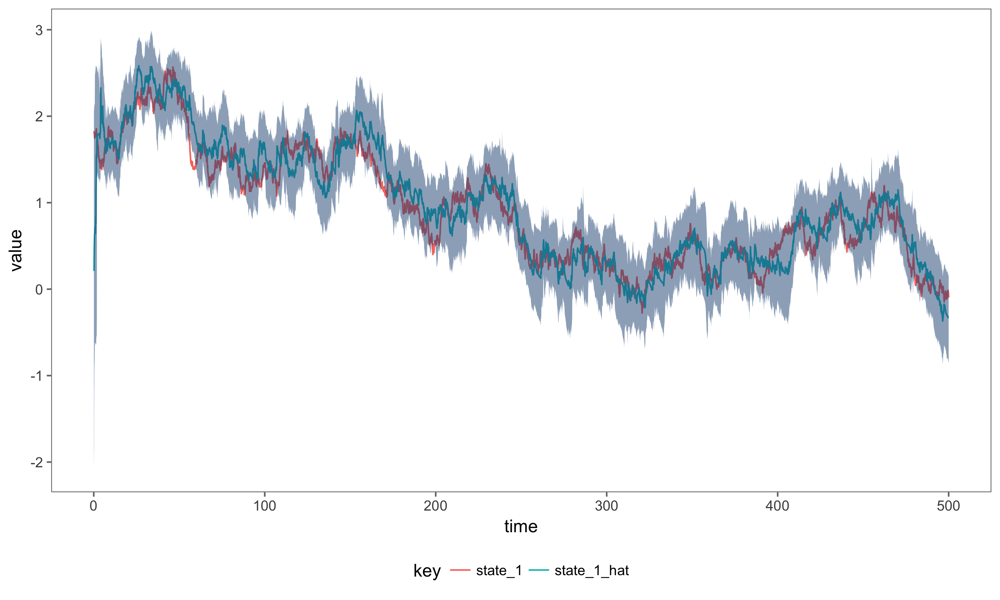

This is the documentation for a Scala library for continuous time partially observed Markov processes (POMP). Partially observed Markov processes can be used to model time series data, allowing interpolation and forecasting.
Introduction to Partially Observed Markov Process Models
Partially observed Markov processes are a type of State Space Model. This means the models feature unobserved, or latent, variables. The unobserved system state is governed by a diffusion process, these are continuous time Markov processes meaning that future values of the state space, are independent from all previous values given the current state, x(t).
The distribution, p, represents the Markov transition kernel of the state space. The distribution pi, represents the observation distribution, parameterised by the state space. The function f is a linear deterministic function, which can be used to add cyclic seasonal components to the state space. The function g is the linking-function from a generalised linear model, which transforms the state space into the parameter space of the observation model. Define $\gamma(t) = F^T_t \textbf{x}(t)$ and $\eta(t) = g(\gamma(t))$.
Required Imports
import com.github.jonnylaw.model._
import breeze.stats.distributions.Gaussian
import breeze.numerics.log
import breeze.linalg.{DenseVector, DenseMatrix, diag}
import cats.implicits._
import akka.stream.scaladsl._
import akka.stream._
import akka.actor.ActorSystem
import akka.util.ByteString
import scala.concurrent.ExecutionContext.Implicits.global
implicit val system = ActorSystem("DocumentationSystem")
implicit val materializer = ActorMaterializer()
Simulating the State Space
An example of a diffusion process is the Ornstein-Uhlenbeck process, which can be simulated by specifying the parameters of the process, theta, the mean of the process, alpha how quickly the process reverts to the mean and sigma the noise of the process. Then we must specify an initial state, which is done by drawing from a Gaussian distribution, since the exact solution to the OU process is a Gaussian distribution. Then we pass a stepFunction containing the exact solution to the OU process, relying on only the previous value of the realisation (because the process is Markovian) and the time difference between realisations.
We can simulate from the SDE using the Akka streams library. We must specify the parameters of the Ornstein Uhlenbeck process, m0 and c0 are the parameters of the initial state, x0 ~ N(m0, c0), theta is the mean, alpha is how quickly the process reverts to the mean and sigma controls the noise of the process. Note that positive parameters are specified on the log-scale.
val ouParameter = SdeParameter.ouParameter(m0 = 0.0, c0 = log(3.0), alpha = log(0.5), sigma = log(0.3))(theta = 2.0, 1.0)
val sde = Sde.ouProcess(2)
val sims = sde(ouParameter).
simStream(0.0, 0.1).
take(200)
We can now save the stream to a file, in order to use it later, or plot it in R:
sims.
zipWithIndex.
map { case (x, t) => t + ", " + x.show }.
runWith(Streaming.writeStreamToFile("data/ornsteinUhlenbeck.csv"))

Notice, the state space is multidimensional, and as such is represented by a DenseVector. A single state is represented by a LeafState, this will become clear when considering composition of models. The figure shows a simulation of a two-dimensional uncoupled Ornstein-Uhlenbeck process with theta = 2.0, 1.0, alpha = 0.05, sigma = 1.0.
Simulating a Single Model
The observations of a POMP can be from any parameterised distribution. The observation distribution depends on the latent variables and sometimes on additional parameters not in the system state, such as a scaling parameter representing measurement noise. A many non-Gaussian observation distributions can be used when building a POMP model, the Negative Binomial distribution is often used when considering overdispersed count data. The Negative binomial is parameterised in terms of its mean which varies stochastically and a scale parameter which controls the overdispersion. The variance is mean + mean^2 / scale, hence the overdispersion is controlled by the inverse of the scale. There is a LeafParameter class which combines the initial State, optional scale parameter and the state space parameters for a single model.
val sde = Sde.brownianMotion(1)
val negBinParams = Parameters.leafParameter(Some(log(3.0)),
SdeParameter.brownianParameter(m0 = 0.0, c0 = log(1.0), sigma = log(0.01)))
val negBinModel = Model.negativeBinomial(sde)
val negBinSims = SimulateData(negBinModel(negBinParams)).
observations
negBinSims.
take(200).
map((d: Data) => d.show).
runWith(Streaming.writeStreamToFile("data/NegBinModelSims.csv"))

The figure shows the state space, which varies along the whole real line and simulated observations from the Negative Binomial Observation distribution. The linking function, g, is the log-link.
Composing Multiple Models
If we wish to consider more complex process, for instance a Negative Binomial model with a seasonally varying mean, then we have to add deterministic values to the state before applying the observation distribution. The function, f, is a linear deterministic function which can be used to add seasonal factors to the system state.
Unparameterised models are represented as Reader[Parameters, Model]. A semigroup is defined on unparameterised models, using the library cats, a semigroup is a set with an associative, closed binary operator. The binary operator is used to compose models, the function is associative, but not commutative, since the composition of two models selects the leftmost Model’s observation and linking functions. The code snippet below shows how to construct a seasonal Negative Binomial model, the observation distribution is Negative Binomial, but the rate of an event occuring follows a daily (period T = 24) cycle if we assume count observations are made once every hour. We have to import cats.implicits._ to use the semigroup notation |+|.
val sde2 = Sde.ouProcess(8)
val seasonalParams = Parameters.leafParameter(None,
SdeParameter.ouParameter(0.0, log(1.0), log(0.3), log(0.01))
(1.5, 1.5, 1.0, 1.0, 1.5, 1.5, 0.1, 0.1))
val composedParams = negBinParams |+| seasonalParams
val composedMod = negBinModel |+| Model.seasonalModel(24, 4, sde2)
val composedSims = SimulateData(composedMod(composedParams)).
observations.
take(500)
Save the simulated data from the composed model in order to plot it
composedSims.
map((d: Data) => d.show).
runWith(Streaming.writeStreamToFile("data/ComposedNegBinSims.csv"))

Statistical Inference: The Particle Filter
If we have a fully specified model, ie the posterior distributions of the parameters given the data so far are available to us, then we can use a bootstrap particle filter (see Sequential Monte Carlo Methods in Practice for a detailed review of the bootstrap particle filter) to determine the hidden state space of the observations.
Consider the simulated Negative Binomial model, the bootstrap particle filter can be applied to the simulated data using a draw from the parameter posterior distribution and the inferred state space can be compared to the previously simulated state space. The data can be read in from a CSV or database, or simulated again. However, since these are stochastic models we can’t compare different realisations of the same model.
Define the particle filter, using 100 particles.
val t0 = 0.0
val filter = ParticleFilter.filter(Resampling.systematicResampling, t0, 1000)
filter is no an Akka Streams Flow, which represents a transformation on a live stream. This flow takes in Data and retruns PfState containing the current estimate of the log-likelihood, the current estimated state, the effective sample size of the particles along with the time and current observation. Next, we run the particle filter over the observed data stream and calculate credible intervals of the state, using the 100 measurements simulated from the composed model.
val filteredNegBin = DataFromFile("data/ComposedNegBinSims.csv").
observations.
via(filter(composedMod(composedParams))).
map(ParticleFilter.getIntervals(composedMod(composedParams))).
map(_.show).
runWith(Streaming.writeStreamToFile("data/NegativeBinomialFiltered.csv"))
The figure below shows the actual simulated state, plotted next to the estimate state and 99% credible intervals.

Inference for the Joint State and Parameter Posterior Distribution
Say we have observed a time depending process in the real world, and don’t have the parameters available for the model. We wish to estimate the joint posterior distribution of the state and the parameters of the model simultaneously. One such (offline) algorithm to determine this posterior is the Particle Marginal Metropolis Hastings (PMMH) Algorithm (see Doucet et al. 2010). The likelihood of the latent state and parameters given the observations can be determined using a particle filter, then a standard Metropolis-Hastings update step is used to create a Markov Chain which converges to the full joint posterior of the latent state and the parameters of the model given the observed real-world process.
We illustrate this can implement the PMMH algorithm for the simulated Negative Binomial observations, and determine if the algorithm is able to recover the parameters. First, we must specify a prior on the parameters:
def prior: Parameters => LogLikelihood = p => 0.0
Create a function from Parameters => LogLikelihood by composing the model (Parameters => Model) with the filter (Model => LogLikelihood). The first 400 data points are read in from a file containing the simulated data and grouped to form a Seq[Data]. mapConcat is then used to create a tuple of (Int, Data) representing an integer identifier for the MCMC chain and all 400 data points. mapAsync will spawn 2 worker threads to run the PMMH algorithm twice in parallel.
import DataProtocols._
import spray.json._
DataFromFile("data/ComposedNegBinSims.csv").
observations.
take(400).
grouped(400).
mapConcat(data => (1 to 2).map(chain => (chain, data))).
mapAsync(2) { case (chain, d) =>
val filter = ParticleFilter.llStateReader(d.toVector, Resampling.systematicResampling, 100)
val pf = filter compose composedMod
val pmmh = MetropolisHastings.pmmhState(composedParams, Parameters.perturb(0.1), (a, b) => 0.0, prior)
pmmh(pf).
take(10). // there are only ten iterations in this example, should use many more in practice
map(_.toJson.compactPrint). // convert each stream element to JSON
runWith(Sink.seq) // materialize the stream as a sequence
}.
runWith(Sink.ignore)
The function pmmh accepts a function Parameters => Likelihood and returns an Akka stream of Source[MetropState] which is consumed using Sink.seq, this is not always the most practical way to store the iterations from an MCMC, especially when the chain gets large. If we increase the number of iterations (from 10 in the example) we should consider writing the iterations to a file. The package provides two output formats and can be extended with knowledge of Akka Streams. Currently parameter estimates and final state estimates can be written to CSV and JSON files.
Note that the algorithm has been initialised at the same parameter values we used to simulate the model, this kind of prior information is not typically known for real world processes, unless similar processes have been extensively studied.
Shutdown the Actor system:
filteredNegBin.onComplete(_ => system.terminate())
For more information on how to use the library, see the examples directory for runnable code.